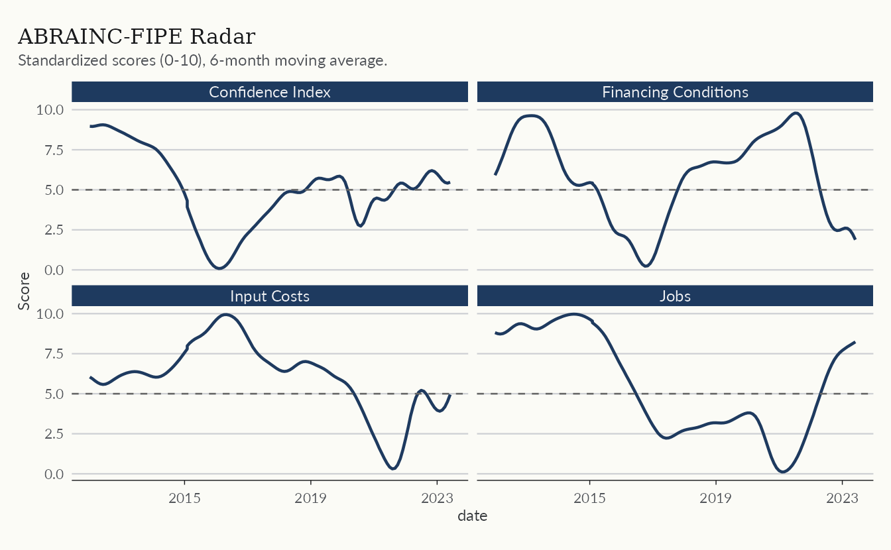
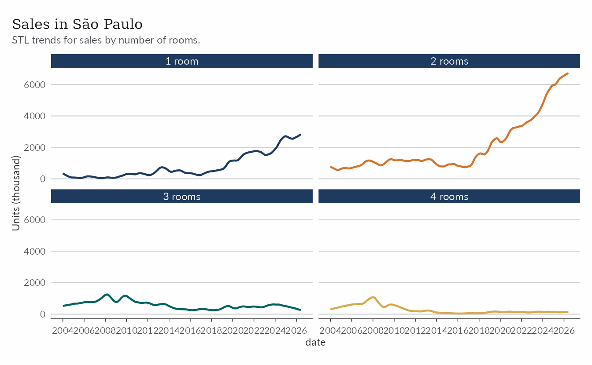

The Primary Market and the Construction Cycle
Source:vignettes/articles/primary-market.Rmd
primary-market.RmdThis article follows the development cycle, from launches to sales and deliveries, and the business environment around it. Three datasets do the work.
-
abraincfor national primary market indicators from the ABRAINC-FIPE panel of developers -
secovifor the São Paulo market -
fgv_ibrefor construction costs and business sentiment
The aim is to show what these datasets hold, not to settle any
question about the market. Besides the usual dplyr and
ggplot2, we use the trendseries package to
estimate trends and cycles.
The code below defines a common theme for the plots in this article and can be omitted.
library(ekioplot)
color_palette <- ekioplot::ekio_pal()
theme_series <- function() {
ekioplot::theme_ekio(base_size = 10) +
theme(
palette.color.discrete = color_palette
)
}Construction costs and sentiment
The fgv_ibre dataset gathers indicators from Fundação
Getulio Vargas (FGV). FGV runs a wide range of surveys, and
realestatebr collects the ones most relevant to
construction and real estate. The name_series and
code_series columns identify each series.
fgv <- get_dataset("fgv_ibre")
count(fgv, name_series, name_simplified)
#> # A tibble: 15 × 3
#> name_series name_simplified n
#> <chr> <chr> <int>
#> 1 ICST Com ajuste Sazonal - Índice de Confiança da Const… ic_cst 193
#> 2 IE-CST Com ajuste Sazonal - Índice de Expectativas da … ie_cst 193
#> 3 INCC - 1o Decendio incc_1o_decend… 259
#> 4 INCC - 2o Decendio incc_2o_decend… 259
#> 5 INCC - Brasil incc_brasil 361
#> 6 INCC - Brasil - DI incc_brasil_di 360
#> 7 INCC - Brasil-10 incc_brasil_10 361
#> 8 INCC - Fechamento Mensal incc 361
#> 9 ISA-CST Com ajuste Sazonal - Índice da Situação Atual … isa_cst 193
#> 10 Sondagem da Construção – Nível de Utilização da Capaci… nuci 160
#> 11 Índice de Variação de Aluguéis Residenciais (IVAR) - B… ivar_belo_hori… 91
#> 12 Índice de Variação de Aluguéis Residenciais (IVAR) - M… ivar_brazil 91
#> 13 Índice de Variação de Aluguéis Residenciais (IVAR) - P… ivar_porto_ale… 91
#> 14 Índice de Variação de Aluguéis Residenciais (IVAR) - R… ivar_rio_de_ja… 91
#> 15 Índice de Variação de Aluguéis Residenciais (IVAR) - S… ivar_sao_paulo 91The plot below shows the confidence indicators of the construction sector. ICST is the overall index, which averages the IE-CST (expectations) and the ISA-CST (current situation). Although these series are already seasonally adjusted, we smooth them with a 12-month moving average to make them more stable. As with most confidence indicators, the values are normalized: values above 100 indicate a more favorable assessment, while values below 100 indicate a less favorable assessment.
confidence <- fgv |>
filter(name_simplified %in% c("ic_cst", "ie_cst", "isa_cst")) |>
augment_trends(group_cols = "name_simplified", methods = "ma") |>
mutate(
indicator = case_when(
name_simplified == "ic_cst" ~ "ICST",
name_simplified == "ie_cst" ~ "IE-CST (Expectations)",
name_simplified == "isa_cst" ~ "ISA-CST (Current Situation)"
)
)
ggplot(confidence, aes(date, trend_ma)) +
geom_line(aes(color = indicator), lwd = 0.8) +
geom_hline(yintercept = 100) +
labs(
title = "Confidence Indicators",
subtitle = "Construction sector confidence indicators, 12-month moving average.",
y = "Index",
color = NULL
) +
theme_series()
Launches and sales
The indicator table from abrainc reports
monthly launches, sales, deliveries, cancellations, and supply for a
panel of large developers. The series are volatile, so the plot below
uses values accumulated over twelve months.
abrainc <- get_dataset("abrainc", table = "indicator")
glimpse(abrainc)
#> Rows: 3,576
#> Columns: 6
#> $ date <date> 2014-01-01, 2014-01-01, 2014-01-01, 2014-01-01, 2014-0…
#> $ year <dbl> 2014, 2014, 2014, 2014, 2014, 2014, 2014, 2014, 2014, 2…
#> $ category <chr> "new_units", "new_units", "new_units", "new_units", "so…
#> $ variable <chr> "total", "market_rate", "social_housing", "other", "tot…
#> $ value <dbl> 1726.0000, NA, NA, NA, 4232.0000, NA, NA, NA, 6409.0000…
#> $ variable_label <chr> "Total", "Market-rate Development", "Social Housing (MC…
abrainc_trends <- abrainc |>
filter(
category %in% c("new_units", "sold"),
variable == "total"
) |>
mutate(
units_12m = zoo::rollsumr(value, k = 12, fill = NA) / 1e3,
category_label = case_when(
category == "new_units" ~ "Launches",
category == "sold" ~ "Sales",
TRUE ~ NA_character_
)
) |>
trendseries::augment_trends(
value_col = "units_12m",
group_cols = "category_label"
)
ggplot(abrainc_trends, aes(date, units_12m, color = category_label)) +
geom_line(lwd = 0.5, alpha = 0.5) +
geom_line(aes(y = trend_stl), lwd = 0.8) +
facet_wrap(vars(category_label), ncol = 1) +
scale_x_date(date_breaks = "1 year", date_labels = "%Y") +
labs(
title = "Launches and Sales in the Primary Market",
subtitle = "Units accumulated in 12 months, ABRAINC-FIPE panel",
y = "Units (thousand)",
color = NULL
) +
theme_series()
Market segments
Brazil has two large segments: (1) social housing production, which is financed and subsidized by the “Minha Casa Minha Vida” program (usually abbreviated as “MCMV”); and (2) market-rate developments. The ABRAINC dataset reports sales and launches for each of these markets.
segments <- abrainc |>
filter(
category == "sold",
variable %in% c("market_rate", "social_housing")
) |>
summarise(
year_total = if (anyNA(value)) NA_real_ else sum(value) / 1e3,
.by = c("variable_label", "year")
) |>
filter(!is.na(year_total))
ggplot(segments, aes(year, year_total)) +
geom_col(aes(fill = variable_label)) +
scale_x_continuous(breaks = scales::breaks_pretty(n = 8)) +
scale_y_continuous(expand = expansion(mult = c(0, 0.05))) +
labs(
title = "Sales by Market Segment",
subtitle = "Total yearly sales by market segment.",
y = "Units (thousand)",
fill = NULL
) +
theme_series()
Business conditions
The radar table condenses the business environment into
standardized 0-10 scores across four dimensions: (1) macroeconomy; (2)
credit; (3) demand; and (4) the real estate sector. The plot shows one
representative indicator from each dimension, smoothed with a six-month
moving average. Note that the moving average is already bundled with the
data in the ma6 column.
radar <- get_dataset("abrainc", table = "radar")
radar_sel <- radar |>
filter(
variable %in%
c("confidence", "finance_condition", "employment", "input_costs"),
date >= as.Date("2012-01-01")
)
ggplot(radar_sel, aes(date, ma6)) +
geom_line(color = color_palette[1], lwd = 0.8) +
geom_hline(yintercept = 5, linetype = 2, color = "gray40") +
facet_wrap(vars(variable_label)) +
scale_x_date(date_breaks = "4 years", date_labels = "%Y") +
labs(
title = "ABRAINC-FIPE Radar",
subtitle = "Standardized scores (0-10), 6-month moving average.",
y = "Score"
) +
theme_series()
The radar indicator has been discontinued upstream, so the series ends at its last published month. The GitHub issue tracks its status.
São Paulo
São Paulo is Brazil’s largest real estate market, and two sources
cover it here. The leading table from abrainc
reports building permits in the city, while secovi reports
supply and sales for the city and the metropolitan region.
A leading indicator
Building permits anticipate construction activity. The
leading table compiles permits in the city of São Paulo
into a leading indicator of real estate activity.
leading <- get_dataset("abrainc", table = "leading")
leading_index <- leading |>
filter(
variable == "leading_index",
zone != "Total",
date >= as.Date("2010-01-01")
)
ggplot(leading_index, aes(date, value)) +
geom_line(color = color_palette[1], lwd = 0.8) +
facet_wrap(vars(zone)) +
scale_x_date(date_breaks = "2 years", date_labels = "%Y") +
labs(
title = "Real Estate Leading Indicator",
subtitle = "Based on building permits in São Paulo (100 = Dec/2000)",
y = "Index"
) +
theme_series()
Supply and sales
The launch and sale tables from
secovi track new supply and sales in the city.
secovi <- get_dataset("secovi")
count(secovi, category, variable)
#> # A tibble: 12 × 3
#> category variable n
#> <chr> <chr> <int>
#> 1 condo default_condominio 240
#> 2 condo icon 1770
#> 3 launch launches 540
#> 4 launch supply 270
#> 5 rent acao_locaticia 1980
#> 6 rent rent_price 236
#> 7 rent tipos_de_garantia 618
#> 8 sale sales 810
#> 9 sale sales_1rooms 810
#> 10 sale sales_2rooms 810
#> 11 sale sales_3rooms 810
#> 12 sale sales_4rooms 810
sp_market <- secovi |>
filter(
variable %in% c("launches", "sales"),
name == "unidades"
) |>
mutate(
units_12m = zoo::rollsumr(value, k = 12, fill = NA) / 1e3
) |>
trendseries::augment_trends(
value_col = "units_12m",
group_cols = "variable"
) |>
mutate(
variable_label = if_else(variable == "launches", "Launches", "Sales")
)
ggplot(sp_market, aes(date)) +
geom_line(
aes(y = units_12m, color = variable_label),
lwd = 0.6,
alpha = 0.5
) +
geom_line(aes(y = trend_stl, color = variable_label), lwd = 0.8) +
facet_wrap(vars(variable_label), ncol = 1) +
scale_x_date(date_breaks = "2 years", date_labels = "%Y") +
guides(color = "none") +
labs(
title = "Launches and Sales in São Paulo",
subtitle = "Units accumulated in 12 months, SECOVI-SP",
y = "Units (thousand)",
color = NULL
) +
theme_series()
Some series break the totals down further. The plot below shows sales by number of rooms.
sp_market_rooms <- secovi |>
filter(
grepl("sales_[0-9]rooms", variable),
name == "unidades"
) |>
trendseries::augment_trends(group_cols = "variable") |>
mutate(
variable_label = regmatches(variable, regexpr("\\d+", variable)),
variable_label = if_else(
variable == "sales_1rooms",
paste(variable_label, "room"),
paste(variable_label, "rooms")
)
)
ggplot(sp_market_rooms, aes(date)) +
geom_line(aes(y = trend_stl, color = variable_label), lwd = 0.8) +
facet_wrap(vars(variable_label)) +
scale_x_date(date_breaks = "2 years", date_labels = "%Y") +
guides(color = "none") +
labs(
title = "Sales in São Paulo",
subtitle = "STL trends for sales by number of rooms.",
y = "Units (thousand)"
) +
theme_series()
Learn more
The help topics ?abrainc, ?secovi, and
?fgv_ibre document the columns of each dataset used here.
For housing credit, see Housing Credit in
Brazil; for price indices, see Working with Property Price
Indices.